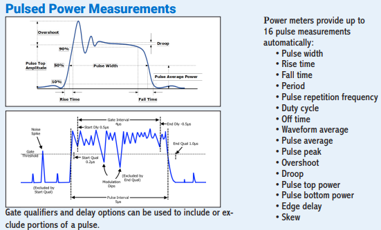
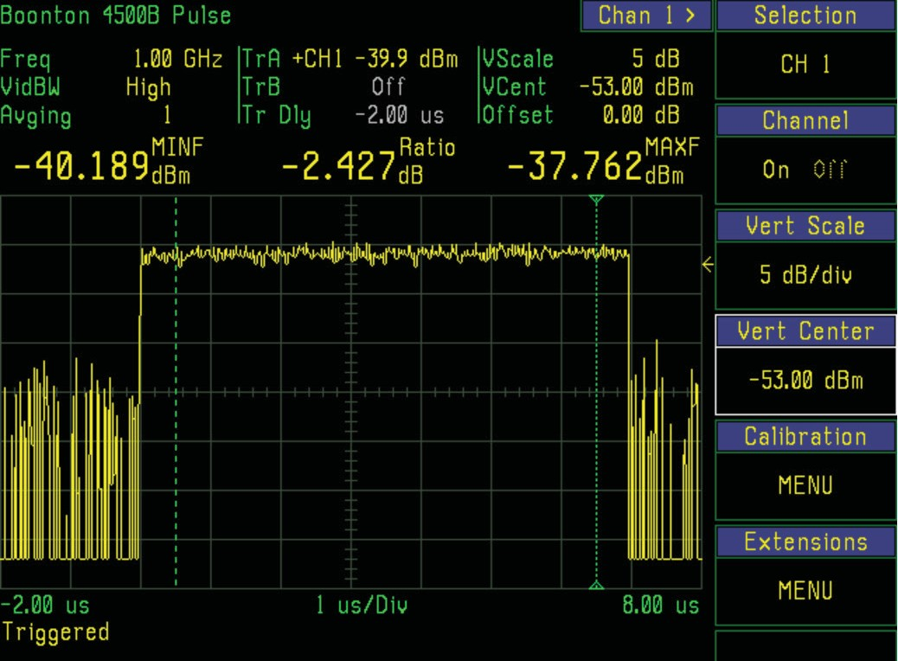
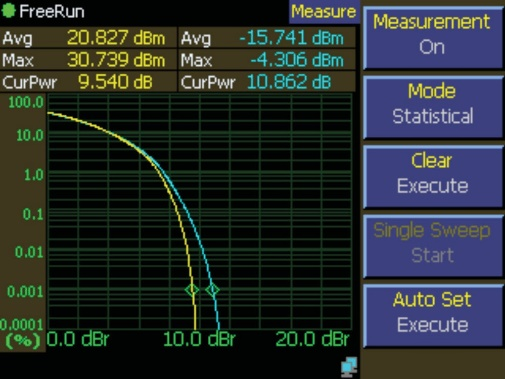
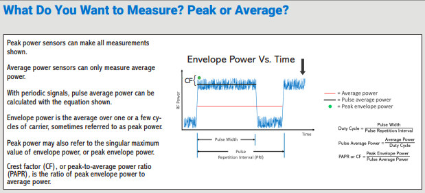

Chapter 3: CW, Average, and Peak Power
When engineers say "power," they usually mean one of three quantities. CW power. Average power. Peak power. These are different numbers, and they answer different questions.
A CW (continuous wave) signal is an unmodulated sinusoid. Its amplitude is constant over time. CW power is simply the power of that sinusoid: Vrms² / R for a resistive load. Any sensor worth its connector can measure CW power accurately. CW is the easy case.
Once you modulate the signal, whether with AM, FM, digital modulation, pulses, or a complex OFDM waveform, the instantaneous power varies. Now two distinct numbers matter. Average power is the mean of the instantaneous power, averaged over a window long enough to capture the modulation cycle. Peak power is the maximum instantaneous power reached during the window.
For a CW signal, average equals peak, and both equal the signal's CW power. For a modulated signal, they diverge, sometimes dramatically. A 5G signal may have a peak-to-average ratio of 8 to 12 dB, meaning the instantaneous peaks are six to sixteen times larger than the average. A low duty-cycle radar pulse may have a peak power thousands of times larger than its long-term average.
Knowing which of these three numbers you need, and which your sensor is measuring, is the single most important decision in any RF power measurement.
3.1 CW Power Meter Limitations
Early RF power meters were designed for CW. That was all anyone measured. The sensor bandwidth, the meter averaging, and the calibration all assumed a steady-state signal.
Hand a classical CW power meter a pulsed signal and it will give you a number. Hand it two different pulsed signals with the same average power but different duty cycles and it will give you the same number. The meter is correctly reporting average power. The user is almost always looking for something else.
CW meters become actively misleading when the signal has a peak-to-average ratio that exceeds the sensor's square law range. The high peaks push the diode out of square law, and the reading starts to depend on crest factor rather than true average power. Two signals with identical average power but different peak structure report different readings. The error can be several dB, which in an RF context is a factor of two or more.
Running a CW meter on a CW signal is fine. Running one on anything modulated, without understanding its limits, is where measurement arguments begin.
3.2 The Peak Power Solution
Peak power sensors solved the problem by widening the sensor bandwidth, speeding up the detector, and giving the user access to the time-domain envelope of the signal.
A modern peak power sensor samples its diode detector at hundreds of megasamples per second and delivers a real-time trace of instantaneous power versus time. That trace can be triggered, windowed, and analyzed in any number of ways. You can ask for the peak of the trace, the average over a defined gate, the pulse width, the rise time, the overshoot, the droop, the duty cycle, and dozens of derived statistics.
In short, a peak power sensor is a scope for power.

The diode samples can be analyzed to yield statistics about the signal's power distribution, and assembled into an oscilloscope-like power-versus-time trace.



Modern peak sensors push rise times into the low-nanosecond range, time resolution to a hundred picoseconds, and video bandwidth well past 100 MHz, all in USB form factors that fit in a jacket pocket. For the average-power side of the question, the Berkeley Nucleonics Model 12100 series, discussed at length in Chapter 11, delivers true-RMS readings on any modulation up to 50 GHz with no zeroing or pre-use calibration.

3.3 It Is All About Bandwidth
The headline specification of a peak power sensor is its video bandwidth. Video bandwidth describes how fast the sensor can follow changes in the signal's envelope. If you want to see the instantaneous power of a 20 MHz LTE signal without distortion, you need a sensor with video bandwidth well above 20 MHz. If you want to see the peaks of a 100 MHz 5G NR carrier, you need proportionally more.
A useful rule of thumb relates video bandwidth to the sensor's risetime:
Video Bandwidth ≈ 0.35 / Risetime
and, equivalently, Risetime ≈ 0.35 / Video Bandwidth
A 3 ns rise time corresponds to about 117 MHz of usable envelope bandwidth. A 1 ns rise time corresponds to about 350 MHz. The wider you go, the more expensive the sensor and the more careful your signal path has to be.
When your sensor bandwidth is narrower than your modulation bandwidth, the envelope is filtered and the peaks you measure are smaller than the peaks that are actually there. This is one of the classic under-measurements in RF work. Buy enough bandwidth margin. Your future self will thank you.
3.4 Understanding Dynamic Range
Dynamic range is the span from the sensor's noise floor to its maximum measurable input, expressed in dB. A typical modern peak sensor offers 70 dB or more of peak dynamic range; a good average sensor offers 80 dB or more.
Dynamic range matters for two reasons. First, the bottom of the range sets your sensitivity. How small a signal can you measure? Second, the top of the range sets your overload point. How large a signal can you tolerate before the sensor starts distorting or, worse, gets damaged?
Peak-to-average ratio eats dynamic range.
A signal with a 10 dB peak-to-average ratio effectively consumes 10 dB of the sensor's headroom, since the sensor has to accommodate the peaks without clipping while still resolving the low signal levels of interest. Multi-carrier and modern digital signals with high crest factors have pushed dynamic range to the top of the specification sheet for any sensor aimed at communications or radar.
A practical guideline: choose a sensor whose dynamic range covers your worst case signal plus at least 10 dB of margin. If you think your signal runs from -30 to +15 dBm, pick a sensor rated at least -40 to +25 dBm. Margin is cheap. Replacing a damaged sensor is not.
Check your understanding
Three quick questions on CW, average, and peak power. Your answers save on this device.